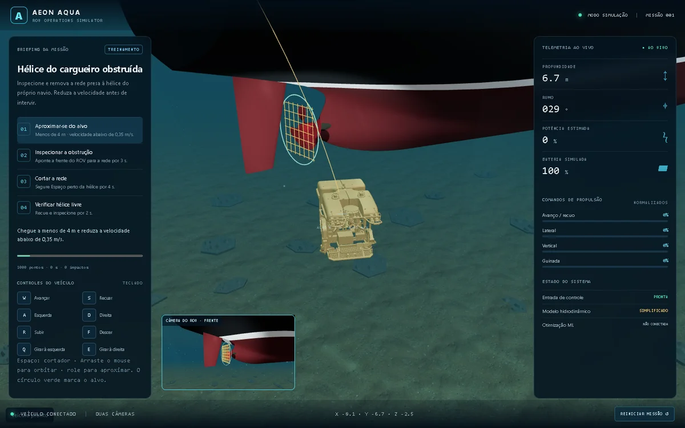

Engenharia oceânica
PROJETOS NAVAIS.
Explore o cargueiro do AEON AQUA e opere o ROV na missão de desobstrução da hélice, ou acesse as outras ferramentas abaixo.

Simulação 3D · ROV
AEON AQUA
Pilote o Hercules, inspecione a hélice do navio e corte a rede que impede sua operação.
Operar ROV ↗
Engenharia naval
Simulador de propulsão
Investigue coeficientes Kt, Kq, J e eficiência propulsiva.
Abrir ↗
Machine learning
ML Learner
Compare modelos de regressão e classificação no navegador.
Abrir ↗Radar naval
ROV & ENGENHARIA NAVAL.
Buscando notícias…
Notícias de fontes externas. Os links abrem o conteúdo original.
Contato
VAMOS CONVERSAR.
Pesquisa, projetos e desafios em engenharia e tecnologia.
alanmirandarj@gmail.com ↗